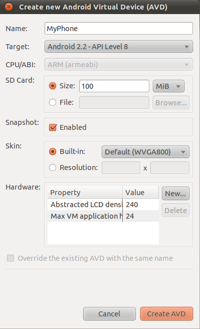
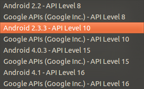
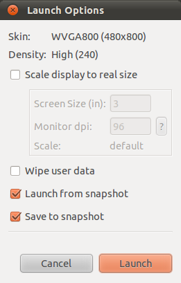

An Android Virtual Device (AVD) is an emulator configuration that lets you model an actual device by defining hardware and software options to be emulated by the Android Emulator.
— Android Developers
AVD 跟 emulator 的關係密切，卻也讓人常常混淆。簡單的說 AVD 就是一組軟硬體的設定，emulator 則是依照設定模擬出對應的執行環境。
 |
 |
 |
AVD 的組成有：
-
AVD 的名稱 - 由英數字、
_、-和.組成，不能含有空白，建議用駱駝文。 -
關於硬體特徵（profile）的設定 - 包括螢幕大小、記憶體大小、有沒有 GPS、實體鍵盤、前後相機、SD card 等。
-
Android 平台的版本 - 選擇可用的 system image，這也決定了 API Level 與 Add-on（例如 Google APIs）。
-
是否啟用 Snapshot 功能。
|
|
應用程式應在所有 API Level 大於或等於 minimum API Level 的不同 AVD 上測過，確保在不同版本的平台上都能正常運作。但這跟 forward-compatibility 有什麼關係？ |
AVD 的設定預設會存放在 ~/.android/avd 底下的 .ini 檔跟 .avd 資料夾。其中 .adv 資料夾除了 config.ini 存放幾乎所有的設定值之外，剩下的都是 disk images：
$ cd ~/.android/avd
$ tree
.
|-- MyPhone.avd
| |-- config.ini
| |-- sdcard.img  | |-- snapshots.img
| |-- snapshots.img  | `-- userdata.img
| `-- userdata.img  `-- MyPhone.ini
$ cat MyPhone.ini
`-- MyPhone.ini
$ cat MyPhone.ini  target=android-8
path=/home/<user>/.android/avd/MyPhone.avd
$ cat MyPhone.avd/config.ini
target=android-8
path=/home/<user>/.android/avd/MyPhone.avd
$ cat MyPhone.avd/config.ini  hw.lcd.density=240
sdcard.size=100M
skin.name=WVGA800
skin.path=platforms/android-8/skins/WVGA800
hw.cpu.arch=arm
abi.type=armeabi
vm.heapSize=24
snapshot.present=true
image.sysdir.1=platforms/android-8/images/
hw.lcd.density=240
sdcard.size=100M
skin.name=WVGA800
skin.path=platforms/android-8/skins/WVGA800
hw.cpu.arch=arm
abi.type=armeabi
vm.heapSize=24
snapshot.present=true
image.sysdir.1=platforms/android-8/images/
AVD 的設定由 .ini 帶出來，裡面除了記載 API Level 之外，剩下的就是 .avd 資料夾的絕對路徑。
| |
除了 API Level 之外，AVD 其他的設定都在 .avd/config.ini 裡。
| |
sdcard.img - 用來存放 SD card 的內容，有配置 SD card 時才有。
| |
snapshots.img - 用來存放一或多個 snapshots，有啟用 Snapshot 時才有。
| |
userdata.img - 用來存放使用者安裝的應用程式、設定等。
|